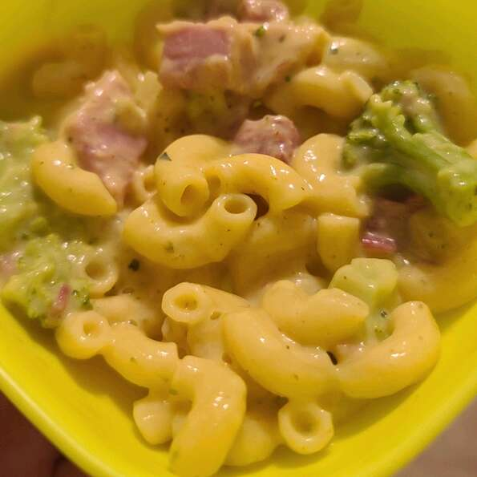

Pasta

Description
Ingredients
- 2 ¼ cups shell pasta
- 2 cups broccoli florets
- 1 (10.75 ounce) can reduced-fat condensed broccoli cheese soup
- 1 cup milk
- 1 (4.5 ounce) can mushrooms
- ¼ cup chopped onion
- 1 tablespoon spicy brown mustard
- salt and ground black pepper to taste
- 1 ½ cups diced cooked ham
Steps
- Bring a large pot of lightly salted water to a boil; add shell pasta and cook, stirring occasionally, until tender yet firm to the bite, about 9 minutes; drain.
- Combine broccoli florets, broccoli soup, milk, mushrooms with liquid, onion, mustard, salt, and pepper together in a large skillet; bring to a boil. Reduce heat to low and cook, stirring occasionally, until broccoli is tender, about 5 minutes.
- Stir pasta and ham into broccoli mixture and cook, stirring occasionally, until hot and bubbling, 5 to 7 minutes more.